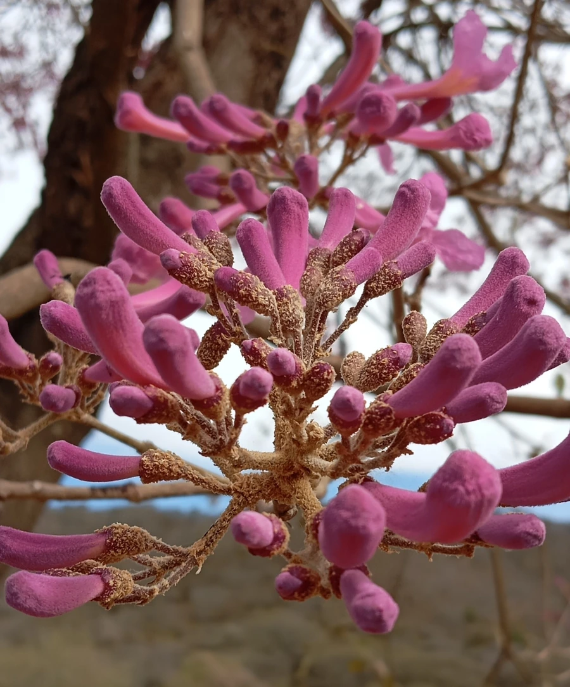

乔木 · 植物界
紫花风铃木 Handroanthus impetiginosus

紫葳科黄钟木属落叶乔木，先花后叶，满树紫红色喇叭状花朵如云似霞，是热带亚热带地区著名的观花树种。
- 分类
- 门被子植物门纲木兰纲目唇形目科紫葳科属黄钟木属
- 栖息环境
- 热带亚热带低海拔平原与丘陵，喜高温、充足阳光，不耐寒
- 地理分布
- 原产巴西、阿根廷、巴拉圭；中国广东、广西、福建、云南、海南引种
- 保护级别
- 暂无评估；中国未列入国家重点保护野生植物名录
物种志
紫花风铃木为紫葳科黄钟木属落叶乔木，高八至十五米，树皮灰褐色，树冠伞形。掌状复叶，小叶五枚，椭圆形至倒卵形，边缘有锯齿，落叶后不久即开花。花紫红色至粉紫色，花冠喇叭状，先端五裂，簇生于枝顶，形成大型圆锥花序，花期十二月至翌年三月，先花后叶，满树繁花；蒴果线形，成熟时褐色并开裂，种子具膜质翅，果期四至五月。
紫花风铃木原产巴西、阿根廷、巴拉圭等南美洲国家，中国广东、广西、福建、云南、海南等地有引种。它喜高温、充足阳光和排水良好的土壤，不耐寒，冬季低温时落叶。花大色艳、花期集中，盛开时几乎不见叶片，是南方城市极具观赏价值的行道树和庭园树；木材较轻软，可供一般用材。近年来在华南地区广泛用于街道、公园和景区绿化。
形态与习性
- 株高8–15 m，树冠伞形
- 花期12 月至翌年 3 月，先花后叶
- 果期4–5 月，蒴果线形
- 光照极喜光，光照足则花繁
- 水分喜湿润，忌积水
- 土壤疏松肥沃、排水良好
- 主要用途行道树与庭园观花树
趣味知识
- 紫花风铃木先花后叶，盛花期整棵树只见花不见叶，像撑开的紫色花伞。
- 它的花冠呈喇叭状，喉部常带黄色斑纹，是蜂鸟和蜜蜂的蜜源。
- 华南地区冬季少雨时开花最盛，花期可持续一个多月。